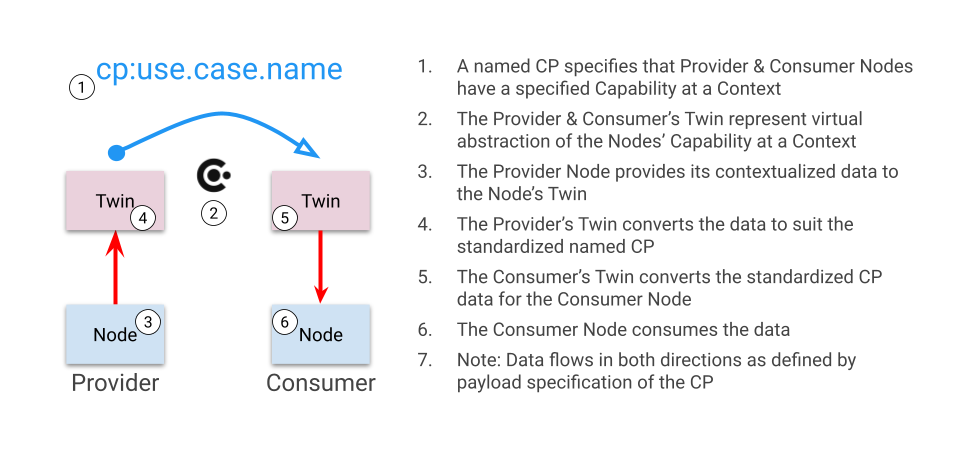

Architecture
The Arete orchestration process provides a practical framework for securely connecting systems across diverse domains by leveraging a standardized, context-driven approach. At the heart of Arete are three key steps that bring order and clarity to the complexity of interoperable networks: the gathering of nodes within defined contexts, the careful matching of those contexts, and the binding of capabilities using standardized Connection Profiles. These steps ensure robust, policy-driven integration, making collaboration across systems both secure and dynamic. Below, each step will be described in detail to illustrate the Arete approach. Do you want more detail?
Step 1: Gathering Nodes

The orchestrator collects all Nodes (atomic systems or services) within its Realm, relying on the onboarding twinning process of Nodes from Constituent Systems. This builds a synchronized inventory of Twins of the Nodes that can be filtered or grouped by origin or attributes required for matching Context and Binding Capabilities.
Step 2: Matching Contexts

Description for Matching Contexts step will be added here.
Step 3: Binding Capabilities
Once Contexts match, the orchestrator analyzes each Node's Capabilities—each described using a standardized Connection Profile (CP). Providers are paired with Consumers, and valid matches result in an enforceable, policy-driven connection instance.